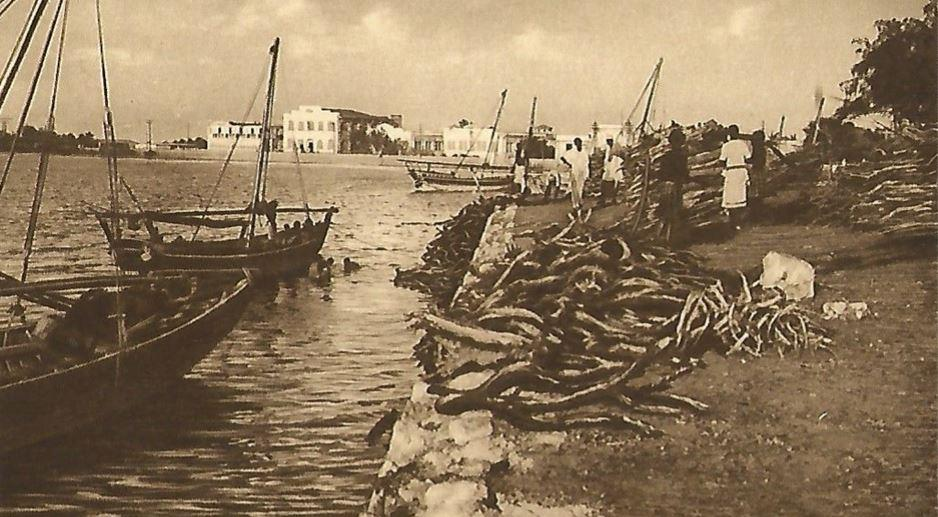

Malgré de multiples pérégrinations sur le plateau du Serpent à Djibouti sur celui du Marabout et au centre-ville où je suis tombé, certes, sur la rue de Londres, non loin de la rue de Marseille et de celle de Berne, force est de constater qu’il semble bien ne pas avoir de rue Albert Londres à Djibouti.
Pourtant cet homme a laissé à la postérité un regard, certes colonial, de ce qu’était Djibouti dans les années trente. Un regard enjoué, plein d’humour et sans complaisance sur les sociétés en place à cette époque dans la région. Quelques années plus tard, de retour d’Extrême Orient où il venait de terminer un reportage, il meurt carbonisé sur le navire des messageries « le Georges-Philipar » à deux pas des côtes du Somaliland actuel, non loin du Cap Gardafui. Il gît toujours au fond de l’océan Indien avec son précieux manuscrit, sans jamais avoir rien révélé de son sulfureux reportage en Extrême Orient. Connu aujourd’hui comme le père « du grand-reportage » dont un prix annuel, portant son nom, récompense et couronne un grand reporter, Albert Londres est né en 1884 à Vichy.
Se destinant à une carrière de poète, il se retrouve comme reporter rubrique « chiens écrasés » dans un journal. Au moment de la première guerre mondiale, il est propulsé correspondant de guerre au front, faute de volontaires. Ses premiers articles dans Le Petit Journal sur le bombardement de la cathédrale de Reims en 14 par les « Boches » le font remarquer par sa direction et les lecteurs. Déjà son style et son talent émergent mais, au fil du temps, c’est son humanisme et la richesse de son regard, face au monde et aux gens qu’il observe, qui font de ses textes des classiques du genre. Ses prises de positions véhémentes et sa lutte, à coup de dépêches au style nerveux et rythmé, contre le cynisme colonial, (Terre d’ébène) le racisme (Le Juif errant est arrivé) et l’oppression de l’être humain en général (Au bagne, et plus tard, Dante n’avait rien vu), reste aujourd’hui d’une actualité poignante. L’ensemble de son œuvre à fait l’objet d’une réédition dans les années 2010 en format de poche au
« Serpent à plumes ».
Albert Londres transita par trois fois à Djibouti. En 1922 au lendemain de la guerre, les Français ayant besoin de rêves et d’exotisme, il part en embarquant sur le André Lebon pour six mois en Extrême Orient. Il fallait à raison de quatorze nœuds à l’heure, une trentaine de jours pour relier Marseille à Yokohama. Lebagage japonais de mes compatriotes en 1922 se ramenait en gros à Madame Chrysanthème de Loti, à quelques phrases mélodiques de Madame Butterfly ainsi que d’autres du « Pays du sourire ». Un des succès des années 20, un tango intitulé Nuits de Chine se situait bien à Saigon et non en Chine. Mais qu’importait alors l’exactitude de la géographie. Saigon, Tokyo, Shanghai, Macao, des noms évoquant les voyages lointains, s’embrumant de chaleur moite, de mystère, d’odeurs d’opium et d’épices au même titre que Djibouti, Zanzibar et les Comores.
Commencé en 1920, le rêve exotique accompagna et accompagne certainement encore bien des générations. Mais à son deuxième passage en 1930, il s’arrête plus longuement dans la région et c’est à cette période qu’il nous donna sa vision de la mer Rouge, du Hedjaz, des îles Dahlak et de la misère des pêcheurs de perles. Dénoncer l’exploitation de l’homme par l’homme quelle qu’elle soit, était devenu la raison de vivre et de travailler d’Albert Londres. Entre ces deux passages à Djibouti, il avait fourni ses meilleurs reportages. Ceux qui le rendirent célèbre, assirent sa notoriété, et lui créèrent une clientèle de lecteurs. Je veux parler de « Au bagne » en 1922 où il dénonce les conditions de détention au bagne de Guyane qui sera quelques années après fermé.
Dans « Dante n’avait rien vu » en 1923, ce sont les conditions disciplinaires chez les militaires qui sont dénoncées.
Puis en 1925, l’internement des fous dans les asiles de l’époque est évoqué et mis à mal par Albert Londres dans « Les fous » ; enfin « Terre d’ébène » dénonce les conditions de travail et d’exploitation des Africains par les puissances coloniales en décrivant « le moteur à bananes ».
Enfin en 1929, il publie « Le Juif errant est arrivé » qui fut un immense succès. Dans cet ouvrage, Londres s’identifie à ceux dont il va raconter l’histoire. Il court d’un pays à l’autre, de l’Angleterre à la Pologne, de l’Europe centrale à la Roumanie, de ghetto en ghetto pour, enfin, sans avoir ménagé sa peine et parfois au risque de sa vie, arriver à Jérusalem. Il s’évertue à faire comprendre, déjà à l’époque dois-je dire, pourquoi, après la dispersion qui frappa comme une calamité divine le peuple juif, celui-ci tente son rassemblement, dès maintenant, c’est-à-dire suite à la déclaration de lord Balfour, et non l’année prochaine, autour de Jérusalem.
Suite à ces articles et au livre qui en résulta, on s’attendait en 1930 à un reportage, selon son habitude, sur les Arabes avec un titre aussi évocateur que le dernier ouvrage. Au lieu de cela, on eut, un reportage totalement inattendu qui se passait entre le canal de Suez, la mer Rouge, les Dahlak et Massaoua, d’Hodeïda à Djibouti en passant par les îles Farsan, la mer d’Oman et le Golfe persique. Seulement celui-ci concernait les pêcheurs de perles, qui donnent d’ailleurs son titre à l’ouvrage « Pêcheurs de perles ». La surprise résultait, il faut le savoir, de l’opposition de l’émir Abdallah Ibn Séoud lui-même et de son éminence grise, l’anglais Philby. Le succès qui avait en effet accompagné Albert Londres lui ouvrait maintenant de nombreuses portes mais lui en fermait d’autres à cause de la virulence de ses articles. Il fut pourtant reçu par ce géant, fondateur de la lignée toujours régnante sur l’Arabie Saoudite, mais point autorisé à mener enquête. Ibn Séoud ne favorisa pas davantage l’expédition de Thesiger quelques années plus tard, qui pourtant nous donna à lire ce merveilleux ouvrage qu’est le « Désert des déserts ». Il faut se souvenir qu’à cette époque, bien qu’officiellement aboli, le trafic des esclaves vers l’Arabie était encore prospère. Londres en aurait fait un bel article. Kessel sortira « Fortune carrée » en 1932 et le « Marché aux esclaves » en 1933, un an plus tard.
Nous ne nous plaindrons point de ce refus car Albert Londres nous laissa un beau reportage. D’abord et comme savent le faire les journalistes frustrés de ne pouvoir enquêter à leur guise, ils règlent leurs comptes à coups de colonnes et étrillent en général le responsable de leur courroux. En l’occurrence ici Ibn Séoud et le Wahhabisme.
Se référant, dit Albert Londres, à un verset du Coran « Toute science est possible à l’homme, sauf la connaissance de la vie, de la mort et de l’infini », sa majesté Ibn Séoud a pensé que, malgré sa religion et sa modestie, la TSF pourrait rendre aux croyants autant de services qu’elle en rendait aux impies. Mais que diraient ses tribus ? Le modernisme n’était-il pas pour un Wahhabite le sourire du diable ? L’on vit alors arriver à Riad, au cœur de l’Arabie, un jour de 1927, huit cents oulémas et notables provenant de tous les points d’eau du royaume, écrit Albert Londres. Une importante affaire motivait le long voyage de ces congressistes. Il s’agissait de savoir si la TSF était oui ou non de la sorcellerie.
Les présents se consultèrent, étudièrent le Livre sacré et n’y trouvant nul passage que l’on puisse rapprocher de cette invention, les oulémas affirmèrent que la TSF ne leur semblait pas contraire à la loi. Et, suite à ce congrès, le Wahhabisme planta des pylônes dans toute l’Arabie.
Après son enquête à Hodeïda où sa chemise, sitôt sur le corps, semble sortir du lavoir et sur laquelle le « vent de la saison des dattes » colle le sable, le faisant ressembler à une vieille bouteille revêtue de l’humble bure des caves (il s’adressait je pense aux Parisiens, vu la référence culturelle) ; il arrive enfin par boutre, et non en paquebot, à Djibouti. Bien qu’y passant pour la seconde fois, croyant connaître la mer Rouge pour l’avoir déjà sillonnée en paquebot, il sait maintenant à quoi elle ressemble exactement. C’est après le périple de ces dernières semaines, de sambouk en boutre, un choc bien compréhensible. Choc que ressentent toujours actuellement les marins qui descendent la mer Rouge. Il déclare et se sent l’obligation de crier que Djibouti est un paradis, une oasis sur la mer Rouge. Il s’insurge contre les déclarations de ses confrères qui l’ont précédé les années antérieures et qui déclaraient que Djibouti était une chaudière. Avec humour et détachement il écrit « Voyageurs en escale, ne blasphémez plus.
Rien ne vaut un séjour à Djibouti. On y compte dites-vous, quarante-quatre degrés à l’ombre ? Qu’est-ce que cela peut vous faire puisqu’il n’y a pas d’ombre ? ». C’est en effet l’époque du palmier en zinc. Il nous rappelle, lui, le spécialiste du bagne, qu’avant la création de celui de Cayenne et de celui de Nouméa, c’était dans celui d’Obock que l’on entassait les malheureux, qui compte tenu de la température ambiante s’évaporaient rapidement. Il n’en restait déjà rien en 1930, l’odeur du crime s’était envolée elle aussi. Il ne restait que quelques vieilles carcasses de bâtiments à son passage, et en restent encore moins aujourd’hui pour ceux qui veulent y aller voir.
Il nous propose son explication sur l’origine du nom de Djibouti donné par Lagarde à cette nouvelle ville. Explication qui s’ajoutera aux trois autres déjà présentées dans l’article sur Ménélik. En 1892, Lagarde, gouverneur d’Obock, occupa les trois rochers connus alors en géographie sous le nom de CHEIKH GABOD. Gabod, terme dankali (afar), correspond à Gabouti en arabe. Et notre interprète lui, en traduisant l’acte d’achat, de Gabouti fit Djibouti. Il ne devait pas avoir de A sur son clavier ? Il décrit ce qui constitue Djibouti à l’époque. La France commença par réunir les deux premiers rochers pour en faire une bonne rade, non pour y pêcher des perles mais pour ouvrir un port d’où l’on lancerait un chemin de fer à l’assaut du commerce de l’Éthiopie. Le port est sur le papier, en 1930, non encore dans la mer, dit-il. Mais la jetée est faite, et de préciser « c’est l’une des promenades les plus agréables offertes aux pas de l’homme. J’ai vu souvent des audacieux s’y engager sur le coup de midi. Ils n’en revenaient pas. Au coucher du soleil, j’allais examiner sur la terre la trace que leur corps avait laissée en fondant… ». Albert Londres observe un fait que je tâcherais de confirmer dans un prochain numéro, à savoir que les touristes dans la journée ne visitent pas la ville comme on visite d’ordinaire une ville : le nez en l’air. Non, à Djibouti les touristes penchent le nez vers leurs souliers. Personne ne peut le lever. Rien à faire, le soleil pèse trop lourd. Les maisons coloniales de la place Ménélik et alentour sont convenables, pas très hautes à cause du soleil qui est tout de suite au-dessus du toit.
Un étage de plus et la maison crèverait le soleil. On serait joli, ensuite, sous la lave solaire coulant par la brèche. Mais il n’a pas perdu de vue l’article qu’il doit rédiger. Il écrit le 17 juin 1930 du Grand Hôtel Continental, place Ménélik, dont on peut voir en levant le nez, car nous les résidents on peut le faire, l’inscription figurer sur le fronton du bâtiment faisant face à l’Hôtel Ménélik. Il écrit donc « Bonjour, toute la famille ! Je viens de passer par mille aventures en Arabie et au Yémen.
Je vais maintenant dans le golfe persique, à l’île Bahreïn, chez les pêcheurs de perles… car la perle c’est Bahreïn ». Il avait, lors de son cabotage en mer Rouge, rencontré des pêcheurs de perles, de loul comme on dit en arabe, mais pas de comparaison possible avec ce qui se passe dans le golfe persique et où une chose révoltante pour Londres se produit chaque jour que Dieu nous donne. Plus de vingt-cinq sources d’eau douce jaillissent dans la mer salée. Tandis que les hommes à terre n’ont que de l’eau saumâtre à boire, les huîtres, sur leurs bancs, ingurgitent de l’eau douce ! Et c’est cela, paraît-il, qui donne ce lustre exceptionnel aux perles de Bahreïn.
Quand son reportage sera terminé, il ira faire une cure chez lui à Vichy, il le jure, car il ne supporte plus de boire de l’eau saumâtre. En attendant, il se met au travail. Il y avait bien des flottilles de pêcheurs de perles dans les années vingt à Djibouti. Ces flottilles remontaient ramasser les huîtres jusqu’aux îles Farsan, mais dans les années trente, les juifs d’Aden ne dénouaient plus leurs calicots rouges, place Ménélik, pour proposer leurs perles aux touristes. Plongeurs et courtiers avaient fui, les uns en Somalie anglaise, les autres en Érythrée italienne.
Henry de Monfreid confirme également la présence dans les années vingt, pour s’y être investi lui-même, de cette industrie perlière. Le confirme également Monsieur André Marill dont le père Paul Marill avait obtenu des autorités coloniales le monopole de la pêche des perles, de la nacre et du guano. Henry de Monfreid décrit ces petites embarcations emplies de coquilles qui empestaient à des kilomètres à la ronde. Selon le dicton « où il y a de la nacre, il y a de la perle », et on en trouvait sur le plateau d’Obock et dans sa région, m’a-t-on précisé. Mais la législation coloniale, rigoureuse ou du moins pas assez souple, avait fait fuir les forêts de sambouks des eaux de Djibouti.
Albert Londres se trouva donc dans l’obligation de se rendre dans le golfe persique à la bonne saison, c’est à dire de mi-mai à mi-septembre où des flottilles de 500 embarcations partent pour 4 à 5 mois. Sur mer et sur terre, il ne cesse d’interroger les plongeurs. La forme de l’ancre, les cris, les chants, la terminologie, l’immersion durant des minutes qui n’en finissent pas, tout participe d’un rituel bien établi depuis des lustres qu’il consigne dans ses petits carnets. Les plongeurs forcent son admiration. Pour tout matériel, ils n’ont qu’un doigt de cuir (khabat) qui leur permettra de décoller l’huître du rocher sans s’arracher la peau et de se protéger des épines d’oursins, un pince-nez en corne et en bois (al futam) qui sautille à leur cou au bout d’une ficelle.
Une fois au fond de l’eau, ils ramassaient les huîtres et les mettaient dans un panier en fibre de palmier ou de noix de coco (dayyen) attaché à une corde. C’est tout. Pour le reste, ils s’en remettaient à Dieu. Une deuxième corde épaisse, fixée à l’un des avirons, est lestée de plomb ou d’une grosse pierre. Elle leur permettra de remonter au plus tôt à la surface, de leur huit mètres, profondeur moyenne en tirant dessus pour avertir, en surface, leur aide (sahib) de les remonter immédiatement pour vider leurs sacs et remplir leurs poumons. Leur plongée durait de 2 à 3 minutes et un plongeur pouvait en faire en moyenne 50 par jour.
En plongée, le pêcheur a à lutter contre le poisson-scie lequel peut vous couper un bras avec sa double scie de quinze à vingt dents, contre la raie et son épine venimeuse, contre le poisson électrique, enfin contre le requin, le your-your en arabe. La contrepartie des perles espérées, c’est la destruction assurée de l’homme. Entassés sur des embarcations trop petites, les hommes dorment côte à côte pendant trois mois, ne tenant pas plus de place qu’un mort. Ils ne revenaient pas tous vivants d’ailleurs. Chaque bateau, conduit par le capitaine (nakhuda) pouvait embarquer jusqu’à 50 hommes. Un bon capitaine pouvait déterminer les lits d’huîtres en fonction du soleil, des étoiles, de la couleur et de la profondeur de la mer mais aussi du relief. Ils mangent des dattes, du vermicelle, du poisson. Ils ont la teigne. Tous souffrent de maux d’oreilles. La perforation du tympan est générale, presque générale. D’ailleurs, ils attendent l’accident avec impatience. Tant que les plongeurs ne sont pas sourds, on ne les considère pas comme de vrais professionnels. Sous la pression de l’eau, les vaisseaux pulmonaires se rompent et beaucoup remontent, du sang leur sortant par le nez, par les oreilles. Des atteintes de la vue par la conjonction de l’eau salée, du soleil et de la pression conduisent vite à la cécité. Chez ces travailleurs de la mer on envisage la retraite avant trente ans. Et tout cela pour quoi ? Pas pour le plaisir, tout de même pas ! Pour gagner leur vie ? Pas exactement, mais pour diminuer leur dette. En effet durant les mois chômés le patron avance les sacs de riz aux marins et tout ce qu’il leur faut pour vivre, soigner leurs enfants... Une pratique plus conforme avec le Coran que l’usure. Ainsi les plongeurs, d’année en année, de plus en plus endettés sont condamnés à plonger enchaînés en quelque sorte au patron et à leur bateau. C’est cela que dénonce Albert Londres dans son reportage, cette hécatombe, cet esclavage ou cette vie d’esclave. Pour que le lecteur et la lectrice se sentent concernés, il l’interpelle brutalement en fin d’article : « Telle est la voie douloureuse d’un de vos bonheurs Mesdames…… » (En fait ils n’interpellent que les femmes !) Plus loin encore, il dit fermer les yeux quand, à Paris désormais, il voit un collier de perles au cou d’une jolie femme. Dans les années trente, la pêche des perles était la ressource économique principale des émirats du golfe, du détroit d’Ormuz à la côte des Pirates. Elle employait 12.000 hommes au Qatar, soit la moitié de la population de l’émirat à l’époque, et générait des profits énormes bien que déjà concurrencée par la culture perlière japonaise. Dans les années quarante, la mise en exploitation des champs pétrolifères a mis un terme à cette industrie. Aujourd’hui dans les pays du Golfe, il est à nouveau question de s’intéresser à cette ressource naturelle. Le Bahreïn a, quant à lui, interdit les perles de culture et a déposé sa candidature, il y a un an environ, pour inscrire la pêche des perles sur la liste du patrimoine mondial de l’UNESCO.
Albert Londres passa une troisième fois à Djibouti en 1932 en transit vers l’Extrême Orient afin d’y réaliser un reportage, non publié, mais de grande importance, avait-il prévenu. C’est sur le retour qu’il effectua sur le paquebot Georges-Philipar (du nom de l’armateur), dont c’était le voyage inaugural, qu’Albert Londres trouva la mort de bien étrange manière.
C’est donc sur ce navire des messageries maritimes, de 21.000 tonnes et 172 mètres de long, flambant neuf, un des fleurons de notre marine et alors qu’il voyage avec un couple d’amis, les Lang-Willar, jadis connus en Argentine, que Londres trouve la mort. Après avoir fait escale à Colombo et changé une partie de l’équipage chinois, le 15 mai 1932, le Georges-Philipar croise le cap Gardafui, promontoire du nord-est de l’Afrique somalienne, à l’entrée du golfe d’Aden. Après avoir pris son dîner avec les Lang-Willar et leur avoir confié que le manuscrit de son reportage était terminé, il rentre dans sa cabine qu’il ne quitta pas durant toute cette partie du voyage, pour peaufiner son travail. A 3h du matin, le feu prit à trois endroits différents sur le bateau endormi. Le Georges-Philipar transporte 767 personnes, équipage compris. Albert Londres, le baroudeur, ne sait pas nager. Panique à bord. C’est la course aux embarcations.
Un SOS est envoyé aux bateaux croisés dans le Golfe d’Aden. En quelques heures, des navires commencent à apparaître : baleiniers, pétroliers, vapeurs de toutes nationalités. On récupère les naufragés et on dresse une liste des rescapés. Il faut se rendre à l’évidence, Albert Londres est absent au comptage ainsi que 66 autres personnes. Noyé ou brûlé, Albert Londres a disparu. Par l’eau ou par les flammes, il est mort.
Le 16 mai à 8h du matin le Georges-Philipar s’enfonce dans les flots et dérive de 160 milles pendant 4 jours, avant de sombrer le 20 mai 1932 au soir, cerné par une armada hétéroclite. Une quarantaine de corps ne sera jamais retrouvée. Albert Londres étant de ceux-là. On peut donc affirmer qu’il repose au large de la Corne de l’Afrique (d’où le titre de l’article). En France, l’émoi est considérable et les commentaires vont bon train. Si Londres n’a pas quitté sa cabine précipitamment comme d’autres, c’est qu’il voulait probablement avant tout rassembler ses chers documents et les manuscrits de ses articles. Il aurait perdu ainsi un temps précieux. Mais que ramenait-il donc de si explosif ? Les observateurs à l’époque se perdent en conjoncture et les lecteurs avec eux. Seuls les Lang-Willar connaissent la réponse.
On les compte parmi les rescapés. À Djibouti où ils ont été débarqués, ils affirment aux représentant de la presse être « dépositaires de sa pensée, nous en avons assez pour avertir le gouvernement français à notre retour ». La nouvelle est immédiatement câblée de Djibouti à Paris où on les attend avec impatience. Au Caire, le journal parisien l’Excelsior, auquel les Lang-Willar ont promis l’exclusivité de leur témoignage, de leurs documents et de leurs photographies, affrète et met à leur disposition un avion et un équipage particulièrement compétent. Le pilote, le capitaine Goulette est un as vainqueur de nombreux raids aériens. Le mécanicien de grande classe. Il pose leur monoplan de 300 chevaux pour refaire le plein à Brindisi, en Italie fasciste. Il décolle et est attendu à Marignane à Marseille. Peu après ce décollage, l’avion s’écrase sur une colline, non loin de Rome. Sabotage ? Cela paraît probable. Mais aucune certitude ne fut apportée. Les quatre occupants sont morts, leurs corps disloqués et l’appareil en miettes. Il n’a pas brûlé et pourtant aucun document ne fut retrouvé et on ne saura jamais ce qu’ils avaient à révéler. Qui a tué Albert Londres ? Un court-circuit ou une organisation politique, une bande de trafiquants ou les affidés d’un gouvernement ? Un attentat ou un accident ? Le débat reste ouvert et si des citoyens sont en possession de documents, photos, lettres, articles de la presse locale, qu’ils se fassent connaître.

Partager cette page